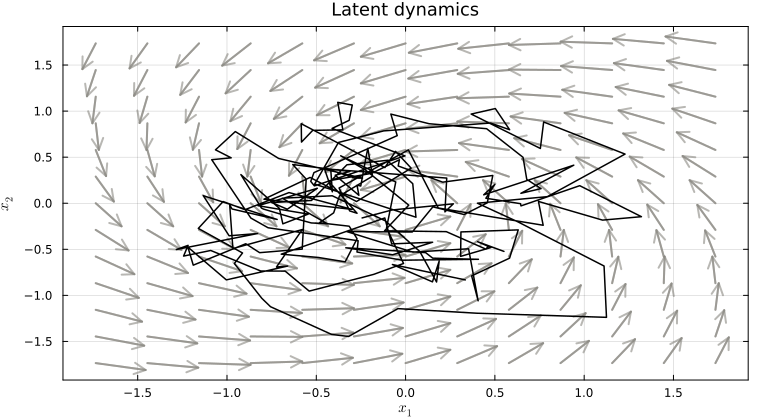
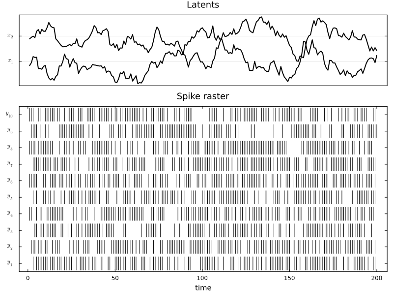
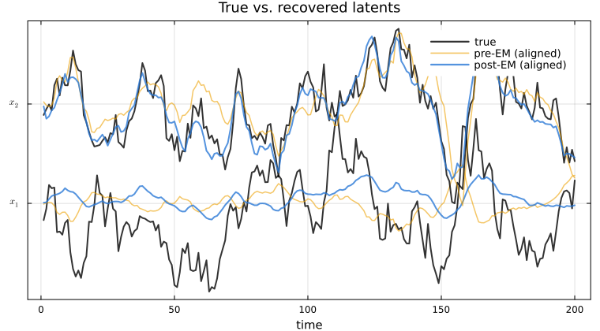
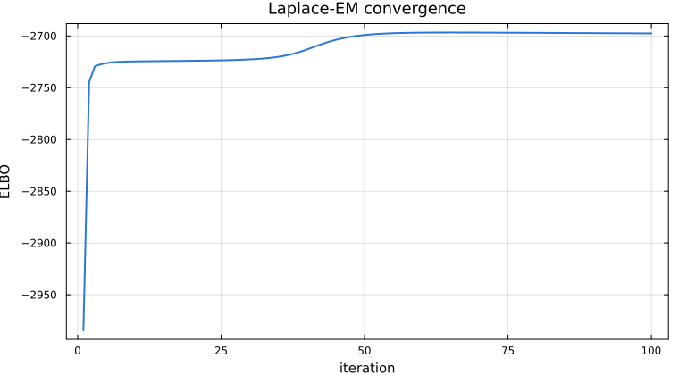

Poisson LDS
A Poisson LDS keeps Gaussian latent dynamics but emits non-negative count observations through an exponential link. This pattern fits neural spike trains, customer arrivals, or any non-negative integer time series whose rate is driven by a hidden continuous process.
using StateSpaceDynamics
using LinearAlgebra
using Random
using Plots
using LaTeXStrings
using StableRNGs
using Statistics
rng = StableRNG(5432);Model
\[\begin{aligned} x_{t+1} &= A x_t + b + \varepsilon_t, & \varepsilon_t &\sim \mathcal{N}(0, Q), \\ \lambda_t &= \exp(C x_t + d), & y_{t,i} &\sim \mathrm{Poisson}(\lambda_{t,i}). \end{aligned}\]
The latent dynamics are identical to the Gaussian LDS; only the observation layer changes. d sets the per-channel baseline log-rate and C says how strongly each latent dimension drives each channel. As in the Gaussian LDS tutorial, we pick $A$ as a contracting rotation so trajectories spiral inward.
obs_dim = 10
latent_dim = 2
A = 0.95 * [cos(0.1) -sin(0.1); sin(0.1) cos(0.1)]
Q = Matrix(0.05 * I(latent_dim))
b = zeros(latent_dim)
x0 = zeros(latent_dim)
P0 = Matrix(0.05 * I(latent_dim))
C = 0.6 * randn(rng, obs_dim, latent_dim)
d = log.(fill(1.0, obs_dim))10-element Vector{Float64}:
0.0
0.0
0.0
0.0
0.0
0.0
0.0
0.0
0.0
0.0A Poisson LDS has five fit_bool blocks — [x0, P0, A, Q, C], with b fit jointly with A and d jointly with C — since there is no observation covariance R.
state_model = GaussianStateModel(; A=A, b=b, Q=Q, x0=x0, P0=P0)
obs_model = PoissonObservationModel(; C=C, d=d)
true_plds = LinearDynamicalSystem(;
state_model=state_model,
obs_model=obs_model,
latent_dim=latent_dim,
obs_dim=obs_dim,
fit_bool=fill(true, 5),
);Simulation
tsteps = 200
latents, observations = rand(rng, true_plds, tsteps);The latent trajectory follows the same kind of inward spiral as in the Gaussian LDS tutorial — the observation layer has no effect on the dynamics.
p_field = let
lim = max(1.0, 1.2 * maximum(abs, latents))
xg = yg = range(-lim, lim; length=13)
X = repeat(xg', length(yg), 1)
Y = repeat(yg, 1, length(xg))
U = similar(X); V = similar(Y)
for j in axes(X, 2), i in axes(X, 1)
v = A * [X[i, j], Y[i, j]]
U[i, j] = v[1] - X[i, j]
V[i, j] = v[2] - Y[i, j]
end
mag = @. sqrt(U^2 + V^2)
step = 2 * lim / 12
quiver(X, Y; quiver=(step .* U ./ mag, step .* V ./ mag),
color="#898781", alpha=0.6)
plot!(latents[1, :], latents[2, :];
color=:black, linewidth=1.5, xlabel=L"x_1", ylabel=L"x_2",
title="Latent dynamics", legend=false)
end
Continuous latents on top, spike rasters below.
p_traces = let
lim_x = maximum(abs, latents)
p = plot(size=(800, 600), layout=@layout[a{0.3h}; b])
for d in 1:latent_dim
plot!(p, 1:tsteps, latents[d, :] .+ lim_x * (d - 1);
color=:black, linewidth=2, label="", subplot=1)
end
plot!(p; subplot=1, title="Latents",
yticks=(lim_x .* (0:latent_dim - 1), [L"x_%$d" for d in 1:latent_dim]),
xticks=[], yformatter=y -> "")
for n in 1:obs_dim
spike_times = findall(>(0), observations[n, :])
for t in spike_times
plot!(p, [t, t], [n - 0.4, n + 0.4];
color=:black, linewidth=1, label="", subplot=2)
end
end
plot!(p; subplot=2, title="Spike raster", xlabel="time",
yticks=(1:obs_dim, [L"y_{%$n}" for n in 1:obs_dim]),
ylims=(0.5, obs_dim + 0.5), grid=false)
end
Smoothing
Because Poisson likelihoods break Gaussian conjugacy, the posterior over latents is no longer Gaussian and smooth uses a Laplace approximation — it finds the MAP latent trajectory by Newton's method and reports the posterior mean and Hessian-derived covariance at the mode.
We initialise the baseline log-rates d at the empirical mean rate of each channel: a cheap, standard initialisation that starts EM with the right firing-rate scale.
naive_plds = LinearDynamicalSystem(;
state_model=GaussianStateModel(;
A=random_rotation_matrix(latent_dim, rng),
Q=Matrix(0.05 * I(latent_dim)),
b=zeros(latent_dim),
x0=zeros(latent_dim),
P0=Matrix(0.05 * I(latent_dim)),
),
obs_model=PoissonObservationModel(;
C=0.5 * randn(rng, obs_dim, latent_dim),
d=log.(vec(mean(observations; dims=2))),
),
latent_dim=latent_dim,
obs_dim=obs_dim,
fit_bool=fill(true, 5),
);
x_pre, _ = smooth(naive_plds, observations);Learning
fit! runs Laplace-EM. It's slower per iteration than the Gaussian version because each E-step solves a Newton optimisation, and count data carries less information per timestep than continuous observations, so we allow more iterations than the Gaussian tutorial.
elbos = fit!(naive_plds, observations; max_iter=100, tol=1e-4);
x_post, _ = smooth(naive_plds, observations);
Fitting Poisson LDS via LaPlaceEM... 2%|█ | ETA: 0:03:05 ( 1.88 s/it)
Fitting Poisson LDS via LaPlaceEM... 16%|████████ | ETA: 0:00:20 ( 0.24 s/it)
Fitting Poisson LDS via LaPlaceEM... 31%|███████████████▌ | ETA: 0:00:09 ( 0.13 s/it)
Fitting Poisson LDS via LaPlaceEM... 46%|███████████████████████ | ETA: 0:00:05 (89.01 ms/it)
Fitting Poisson LDS via LaPlaceEM... 59%|█████████████████████████████▌ | ETA: 0:00:03 (71.15 ms/it)
Fitting Poisson LDS via LaPlaceEM... 73%|████████████████████████████████████▌ | ETA: 0:00:02 (58.96 ms/it)
Fitting Poisson LDS via LaPlaceEM... 87%|███████████████████████████████████████████▌ | ETA: 0:00:01 (50.71 ms/it)
Fitting Poisson LDS via LaPlaceEM... 100%|██████████████████████████████████████████████████| Time: 0:00:04 (45.18 ms/it)The recovered latents match the true ones only up to an invertible change of basis (see the identifiability tutorial), so overlaying raw coordinates is misleading — we first undo the basis with the least-squares linear map, applying the same alignment to the pre-EM estimate for comparison. Even after alignment the match is imperfect: with about one spike per bin per channel, part of the latent fluctuation is simply not visible in the counts. Smoothing with the true parameters leaves a similar residual.
align_to_truth(x) = ((latents * x') / (x * x')) * x
x_pre_aligned = align_to_truth(x_pre)
x_aligned = align_to_truth(x_post);
p_compare = let
lim_x = maximum(abs, latents)
p = plot()
for d in 1:latent_dim
plot!(p, 1:tsteps, latents[d, :] .+ lim_x * (d - 1);
color=:black, linewidth=2,
label=(d == 1 ? "true" : ""), alpha=0.8)
plot!(p, 1:tsteps, x_pre_aligned[d, :] .+ lim_x * (d - 1);
color="#eda100", linewidth=1.5,
label=(d == 1 ? "pre-EM (aligned)" : ""), alpha=0.6)
plot!(p, 1:tsteps, x_aligned[d, :] .+ lim_x * (d - 1);
color="#2a78d6", linewidth=2,
label=(d == 1 ? "post-EM (aligned)" : ""), alpha=0.8)
end
plot!(p; title="True vs. recovered latents",
yticks=(lim_x .* (0:latent_dim - 1), [L"x_%$d" for d in 1:latent_dim]),
xlabel="time", yformatter=y -> "", legend=:topright)
end
ELBO trajectory. Convergence is less smooth than the Gaussian case because each E-step is itself an iterative inner solve.
p_elbo = plot(elbos; xlabel="iteration", ylabel="ELBO",
legend=false, linewidth=2, color="#2a78d6", title="Laplace-EM convergence")
This page was generated using Literate.jl.